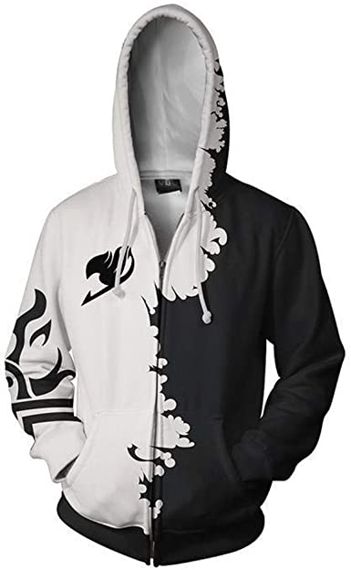

Imponente, majestuoso, grandioso y quizás chispeante, sí así es Laxus Dreyar, uno de los magos mas fuertes de fairy tail
convertido en una figura para tu salón, nada mas colocarla sentirás que hay una chispa entre el y tú, será como si
hubieseis estado conectados toda la vida, iluminará tu vida y casi que ya paro con los chistes sobre rayos, como dice la canción
Laxus es la rebeldia inconformista y la brutalidad, si te encuentras con el lo mejor es comprarte esto por 45.89 Jewels.

Deja que te dominen los poderes del cazador de demonios del hielo sin necesidad de matar a tu padre como hizo nuestro querido
Gray, con esta sudadera nunca pasaras frío, ironico, lo sé, pero no deja de ser cierto, serás el rey de l@s chic@s con esta
sudadera o quizás la reina de l@s chic@s, una cosa es segura, aquí no está Juvia para agobiarte, además irás elegante hasta a tu
boda, que probablemente no te cases si solo utilizas esta sudadera, pero a quien le importa vestirás como un autentico mago solo
por 20 Jewels.
Nuestro ultimo artículo trata de tener más amigos, más o menos, es la explicación rapida, ¿cansado de socializar?, ¿harto de
no tener a tus amigos cuando y donde quieras?, ¿leyendo esto con voz de teletienda?, pues estas llaves son para ti, con ellas
podrás invocar a cualquier espiritu celestial siempre y cuando tengas un contrato con el, por lo de la protección de datos,
tienes un amplio repertorio de invocaciones desde una vaca hasta arriba de esteroides hasta un mayordomo con cabeza de cabra pasando
por una sirena y un par de peces gigantes, happy no son para comer y solo por 60.79 Jewels.